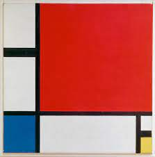

136. Composition with Red, Blue, and Yellow. Piet Mondrian. 1930 CE Oil on Canvas.
- Form
- Only primary colors used–red, yellow, and blue–plus neutral colors, white and black
- Severe geometry of form; only right angles; grid-like forms
- No shading of colors
- Context
- The artist is interested in the material properties of paint, not naturalistic depictions
- The artist expresses ideas using abstract elements–that is, line and color
- Influenced by cubism